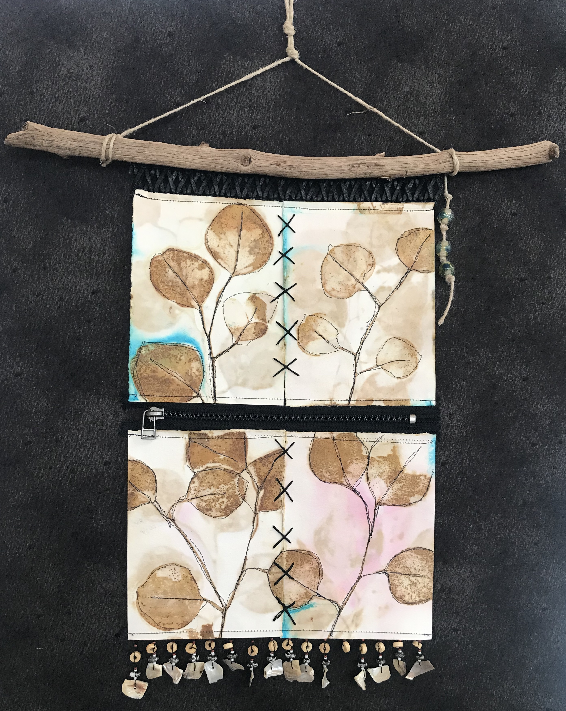
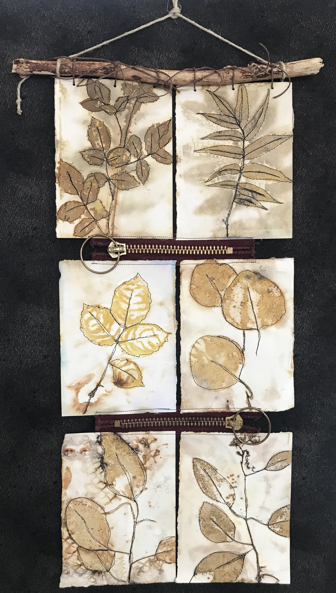
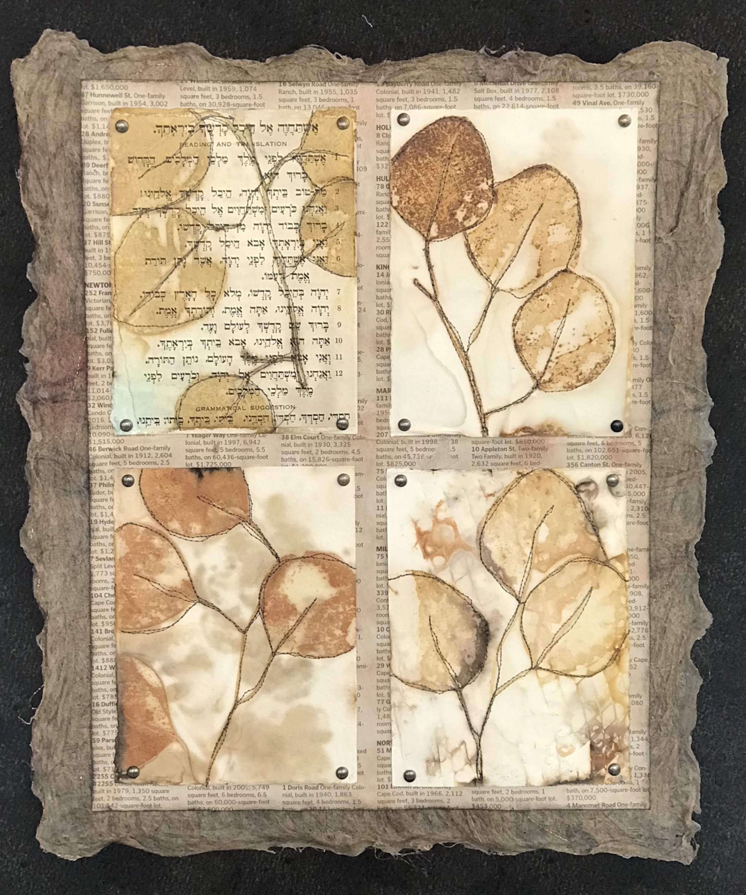

Eco printing is a dyeing process where the colors from plant material are transferred to paper or fabric via steaming or boiling. Wall hangings are created by combining eco-printed materials with surface stitching, paper, fiber, textile embellishments, threads, and trims. Natural materials like raw flax and wood serve as mounting and hanging components.


